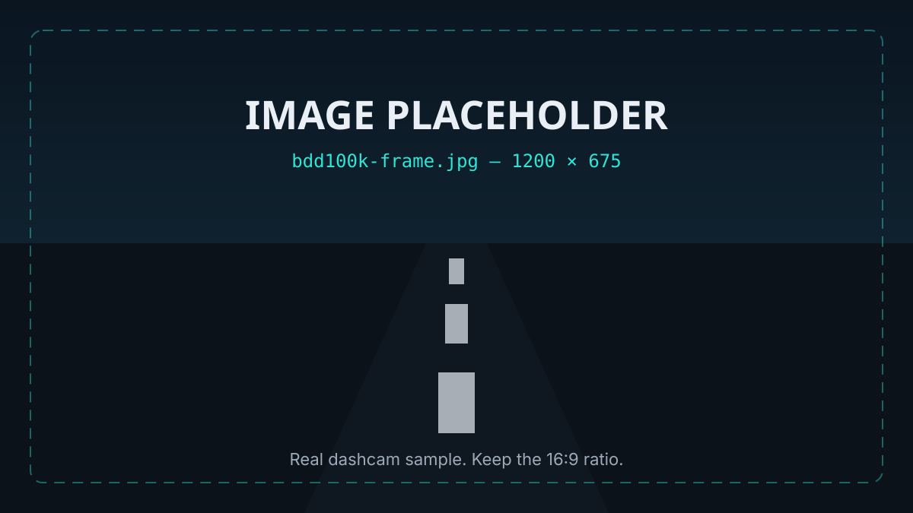
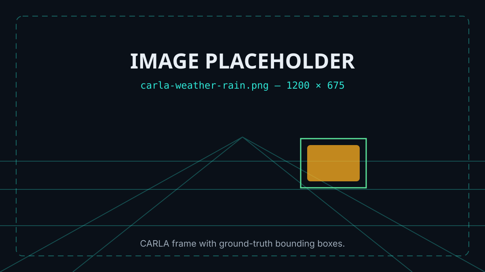

A pipeline description, the data it was validated against, and a lab where
you can degrade the input yourself and watch confidence refuse to move.
The pipeline, end to end
Five stages. Nothing in this chain asks the detector how confident it is.
1
Frame in
A single RGB frame from dashcam video, or a rendered CARLA frame.
2
Detect
A standard object detector runs unchanged and produces boxes plus its
usual confidence scores.
3
Extract
Activations are tapped from intermediate convolutional layers while
the forward pass runs.
4
Predict
A lightweight classifier pools those activations into one failure
likelihood for this frame.
5
Respond
The mode-aware response layer picks a fallback appropriate to the
current autonomy level.
■ Interactive
The degradation lab
Push severity up and watch the two numbers disagree. The detector's
confidence barely flinches; the AEGIS-PX risk estimate tracks the damage.
That disagreement is the entire research thesis.
Synthetic road view with a detection box drawn around the vehicle ahead.
Detector confidence●
98.6%
AEGIS failure risk◆
33%
● Monitoring
The detector is behaving normally.
Controls
ClearSevere
Response layer output
Level 4 — full self-drive, nominal.
◆ Validation
Validated on real footage and simulation
Two sources, because each covers what the other cannot: real-world messiness
you cannot label perfectly, and simulation where every frame's ground truth
is exact by construction.

BDD100K — real dashcam video
across daylight, night, rain and glare. Supplies authentic sensor noise
and the long tail of odd conditions.

CARLA — controlled simulation
with exact ground truth, adjustable weather and repeatable scenarios.
Every condition can be swept precisely.
CONDITION 01
Fog
CONDITION 02
Glare
CONDITION 03
Motion blur
CONDITION 04
Night rain
▲ Response layer
Mode-aware fallbacks
The same risk score means two different things depending on whether a
human is available to receive it.
LEVEL 2–3 · DRIVER HANDBACK
Human available
Hand control back
01
Risk crosses the escalation threshold.
02
Audible + haptic takeover request, with the reason shown.
03
Time-to-handover window, escalating in urgency.
04
If nobody responds → controlled minimum-risk stop.
LEVEL 4–5 · SAFE DEGRADATION
No human
Degrade safely, alone
01
Reduce speed into an envelope where stopping distance still fits visibility.
02
Reweight sensors — down-weight the degraded camera, up-weight radar/lidar.
03
Replan toward the shoulder rather than stopping in a live lane.
04
Execute a minimal-risk stop and report the event.
Prototype measurements
Illustrative figures from the current prototype build, included to show how
results are reported — not certified performance.
Prototype measurements by weather condition
Condition
Detector confidence
AEGIS risk
Failures caught
Clear
99.4%
6%
baseline
Fog
98.9%
61%
84%
Glare
99.1%
57%
79%
Motion blur
98.7%
72%
88%
Read the middle two columns together: confidence stays pinned near 99% in
every row while the risk estimate moves by an order of magnitude.
⚠ Read this first
Research prototype, built as a high-school independent research project.
Not tested for real-world deployment or safety certification. The
secondary classifier is only as good as the conditions it was trained on,
and degraded-condition detection remains an open problem — treat every
figure here as experimental.